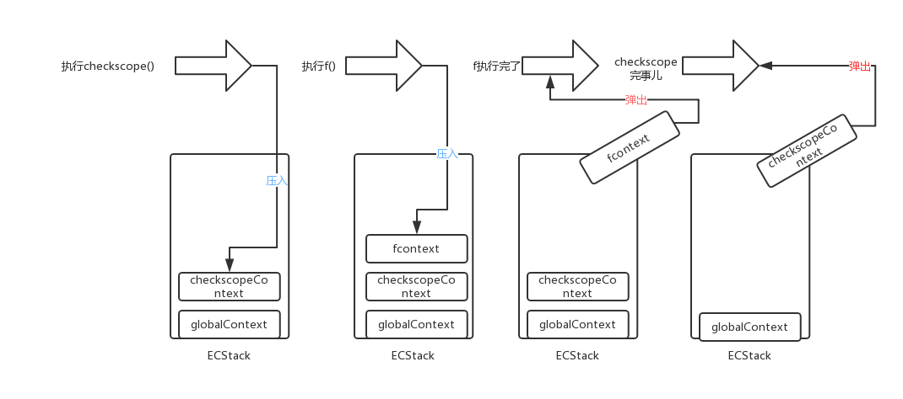
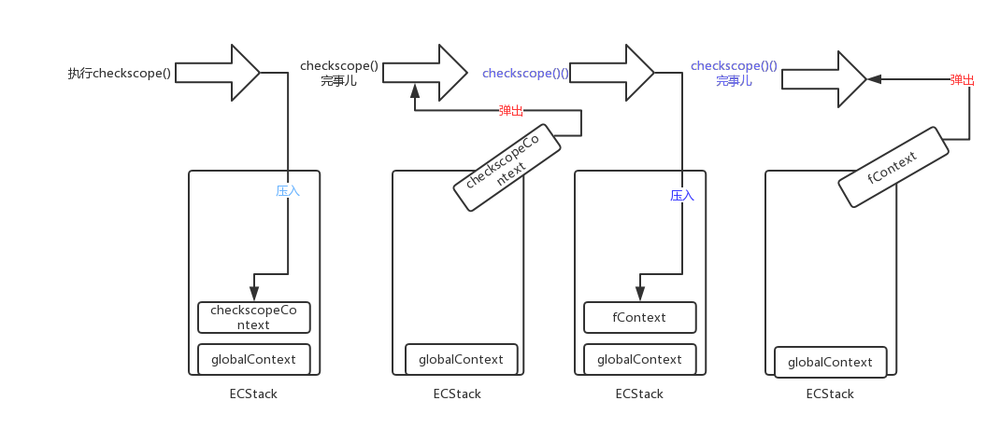
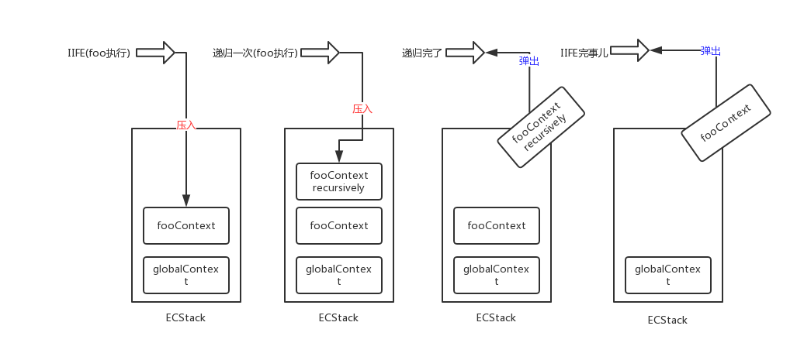

<!DOCTYPE html>
<html>
<head><meta name="generator" content="Hexo 3.8.0">
  <meta charset="utf-8">
  
  <title>深入理解JavaScript系列02-执行上下文 | LIUXUEWEN&#39;S BLOG</title>
  <meta name="viewport" content="width=device-width, initial-scale=1, maximum-scale=1">
  
    <meta name="keywords" content="LIUXUEWEN,LIUXUEWEN's Blog">
  
  <meta name="description" content="一、前言  当你熟悉了上一篇提到的内存空间之后，我们接着梳理我们的 JS 轴线。我们大致了解了代码是怎么样分配空间存储的，现在该探究一下是怎么运行的了。 二、执行上下文 &amp;amp; 可执行代码  执行上下文(简称-EC) 是一个抽象概念，ECMA-262标准用这个概念同 可执行代码(executable code) 概念进行区分。可执行代码与执行上下文是相对的，某些时刻二者等价。   当控制器转到">
<meta name="keywords" content="前端-JS">
<meta property="og:type" content="article">
<meta property="og:title" content="深入理解JavaScript系列02-执行上下文">
<meta property="og:url" content="http://liuxuewen-site.github.io/2019/01/25/JS-deep-02/index.html">
<meta property="og:site_name" content="LIUXUEWEN&#39;S BLOG">
<meta property="og:description" content="一、前言  当你熟悉了上一篇提到的内存空间之后，我们接着梳理我们的 JS 轴线。我们大致了解了代码是怎么样分配空间存储的，现在该探究一下是怎么运行的了。 二、执行上下文 &amp;amp; 可执行代码  执行上下文(简称-EC) 是一个抽象概念，ECMA-262标准用这个概念同 可执行代码(executable code) 概念进行区分。可执行代码与执行上下文是相对的，某些时刻二者等价。   当控制器转到">
<meta property="og:locale" content="default">
<meta property="og:image" content="http://liuxuewen-site.github.io/2019/01/25/JS-deep-02/1.png">
<meta property="og:image" content="http://liuxuewen-site.github.io/2019/01/25/JS-deep-02/2.png">
<meta property="og:image" content="http://liuxuewen-site.github.io/2019/01/25/JS-deep-02/3.png">
<meta property="og:image" content="http://liuxuewen-site.github.io/2019/01/25/JS-deep-02/4.png">
<meta property="og:updated_time" content="2019-01-28T07:48:49.431Z">
<meta name="twitter:card" content="summary">
<meta name="twitter:title" content="深入理解JavaScript系列02-执行上下文">
<meta name="twitter:description" content="一、前言  当你熟悉了上一篇提到的内存空间之后，我们接着梳理我们的 JS 轴线。我们大致了解了代码是怎么样分配空间存储的，现在该探究一下是怎么运行的了。 二、执行上下文 &amp;amp; 可执行代码  执行上下文(简称-EC) 是一个抽象概念，ECMA-262标准用这个概念同 可执行代码(executable code) 概念进行区分。可执行代码与执行上下文是相对的，某些时刻二者等价。   当控制器转到">
<meta name="twitter:image" content="http://liuxuewen-site.github.io/2019/01/25/JS-deep-02/1.png">
  
  
    <link rel="icon" href="/favicon.ico">
  
  <link href="//cdn.bootcss.com/font-awesome/4.7.0/css/font-awesome.min.css" rel="stylesheet" type="text/css">
  <link rel="stylesheet" href="/css/style.css">
  <script src="/js/pace.min.js"></script>
  

  
  

</head>
</html>
<body>
  <div id="container">
      <header id="header">
    <div id="banner"></div>
    <div id="header-outer">
        <div id="header-menu" class="header-menu-pos animated">
            <div class="header-menu-container">
                <a href="/" class="left">
                    <span class="site-title">I AM LIUXUEWEN</span>
                </a>
                <nav id="header-menu-nav" class="right">
                    
                    <a href="/">
                        <i class="fa fa-home"></i>
                        <span>Home</span>
                    </a>
                    
                    <a href="/archives">
                        <i class="fa fa-archive"></i>
                        <span>Archives</span>
                    </a>
                    
                    <a href="/about">
                        <i class="fa fa-user"></i>
                        <span>About</span>
                    </a>
                    
                </nav>
                <a class="mobile-header-menu-button">
                    <i class="fa fa-bars"></i>
                </a>
            </div>
        </div>
        <div id="header-row">
            <div id="logo">
                <a href="/">
                    
                </a>
            </div>
            <div class="header-info">
                <div id="header-title">
                    
                    <h2>
                        I AM LIUXUEWEN
                    </h2>
                    
                </div>
                <div id="header-description">
                    
                    <h3>
                        一个 宅不住 的 IT程序员
                    </h3>
                    
                </div>
            </div>
            <nav class="header-nav">
                <div class="social">
                    
                        <a title="Github" target="_blank" href="//github.com/liuxuewen-site">
                            <i class="fa fa-github fa-2x"></i></a>
                    
                        <a title="Weibo" "="">
                            <i class="fa fa-weibo fa-2x"></i></a>
                    
                        <a title="Weixin" "="">
                            <i class="fa fa-weixin fa-2x"></i></a>
                    
                </div>
            </nav>
        </div>
    </div>
</header>
      <div class="outer">
        <section id="main" class="body-wrap"><article id="post-JS-deep-02" class="article article-type-post" itemscope="" itemprop="blogPost">
  <div class="article-inner">
    
      <header class="article-header">
        
  
    <h1 class="post-title" itemprop="name">
      深入理解JavaScript系列02-执行上下文
    </h1>
    <div class="post-title-bar">
      <ul>
          
              <li>
                  <i class="fa fa-book"></i>
                  
                      <a href="/categories/前端/">前端</a>
                  
              </li>
          
        <li>
          <i class="fa fa-calendar"></i>  2019-01-25
        </li>
        <li>
          <i class="fa fa-eye"></i>
          <span id="busuanzi_value_page_pv"></span>
        </li>
      </ul>
    </div>
  

          
      </header>
    
    <div class="article-entry post-content" itemprop="articleBody">
      
            
            <h3 id="一、前言"><a href="#一、前言" class="headerlink" title="一、前言"></a>一、前言</h3><p>  当你熟悉了上一篇提到的内存空间之后，我们接着梳理我们的 JS 轴线。我们大致了解了代码是怎么样分配空间存储的，现在该探究一下是怎么运行的了。</p>
<h3 id="二、执行上下文-amp-可执行代码"><a href="#二、执行上下文-amp-可执行代码" class="headerlink" title="二、执行上下文 &amp; 可执行代码"></a>二、执行上下文 &amp; 可执行代码</h3><p>  执行上下文(简称-EC) 是一个抽象概念，ECMA-262标准用这个概念同 可执行代码(executable code) 概念进行区分。可执行代码与执行上下文是相对的，某些时刻二者等价。</p>
<p>  当控制器转到一段可执行代码的时候就会进入到一个执行上下文。执行上下文是一个堆栈结构(先进后出)，栈底部永远是全局上下文，栈顶是当前活动的上下文，其余都是在等待的状态，这也印证了 JS 中函数执行的原子性。</p>
<p>  所以，用一句话说就是：函数在调用的时候就为其创建一个执行上下文，并将这个执行上下文压入到上下文堆栈中，执行完了弹出去，或者是遇到了提前终止可执行代码进行的，比如 return。全局上下文在浏览器窗口关闭后出栈。</p>
<p>  我们来看看可执行代码，一共有 3 种 ECMA 脚本可执行代码:<br>  1）全局代码<br>  2）函数代码<br>  3）eval代码</p>
<p>  我们使用数组来模拟一个上下文堆栈：<br>  <figure class="highlight bash"><table><tr><td class="gutter"><pre><span class="line">1</span><br></pre></td><td class="code"><pre><span class="line">ECStack = []</span><br></pre></td></tr></table></figure></p>
  <font size="4" face="黑体"><strong>1、全局代码：</strong></font>

<p>  例如外部引入的 js 代码或者 script 标签内的本地代码，其上下文堆栈：<br>  <figure class="highlight bash"><table><tr><td class="gutter"><pre><span class="line">1</span><br><span class="line">2</span><br><span class="line">3</span><br></pre></td><td class="code"><pre><span class="line">ECStack = [</span><br><span class="line">    globalContext</span><br><span class="line">]</span><br></pre></td></tr></table></figure></p>
  <font size="4" face="黑体"><strong>2、函数代码：</strong></font>

<p>  进入函数的时候就会产生一个执行上下文，为其后续的操作做筹备，这个执行上下文被压入了 ECStack。倘若函数内部还有 inner 函数，进入这个 inner 函数的时候会创建它自己的执行上下文，也就是说函数代码不包括其 inner 的函数代码。</p>
<p>  举个例子分析一下:<br>  <figure class="highlight bash"><table><tr><td class="gutter"><pre><span class="line">1</span><br><span class="line">2</span><br><span class="line">3</span><br><span class="line">4</span><br><span class="line">5</span><br><span class="line">6</span><br><span class="line">7</span><br><span class="line">8</span><br><span class="line">9</span><br><span class="line">10</span><br><span class="line">11</span><br><span class="line">12</span><br><span class="line">13</span><br><span class="line">14</span><br><span class="line">15</span><br><span class="line">16</span><br><span class="line">17</span><br><span class="line">18</span><br><span class="line">19</span><br><span class="line">20</span><br><span class="line">21</span><br></pre></td><td class="code"><pre><span class="line">// 1</span><br><span class="line">var scope = <span class="string">"global scope"</span>;</span><br><span class="line"><span class="keyword">function</span> <span class="function"><span class="title">checkscope</span></span>()&#123;</span><br><span class="line">    var scope = <span class="string">"local scope"</span>;</span><br><span class="line">    <span class="keyword">function</span> <span class="function"><span class="title">f</span></span>()&#123;</span><br><span class="line">        <span class="built_in">return</span> scope;</span><br><span class="line">    &#125;</span><br><span class="line">    <span class="built_in">return</span> f();</span><br><span class="line">&#125;</span><br><span class="line">checkscope();</span><br><span class="line"></span><br><span class="line">// 2</span><br><span class="line">var scope = <span class="string">"global scope"</span>;</span><br><span class="line"><span class="keyword">function</span> <span class="function"><span class="title">checkscope</span></span>()&#123;</span><br><span class="line">    var scope = <span class="string">"local scope"</span>;</span><br><span class="line">    <span class="keyword">function</span> <span class="function"><span class="title">f</span></span>()&#123;</span><br><span class="line">        <span class="built_in">return</span> scope;</span><br><span class="line">    &#125;</span><br><span class="line">    <span class="built_in">return</span> f;</span><br><span class="line">&#125;</span><br><span class="line">checkscope()();</span><br></pre></td></tr></table></figure></p>
<p>  首先这个题是抄袭的 <a href="https://github.com/mqyqingfeng" target="_blank" rel="noopener">冴羽</a> 的。两个都是输出 local scope，结果是一样的，但是其上下文堆栈中却发生着不同的故事。如果你觉得输出的不是这个结果，建议看看冴羽的文章中关于词法作用域和动态作用域的区别。</p>
<p>  对于 1 中发生的故事:</p>
<p>  </p>
<p>  对于 2 中的故事:</p>
<p>  </p>
<p>  再看个例子分析一下:<br>  <figure class="highlight bash"><table><tr><td class="gutter"><pre><span class="line">1</span><br><span class="line">2</span><br><span class="line">3</span><br><span class="line">4</span><br><span class="line">5</span><br><span class="line">6</span><br></pre></td><td class="code"><pre><span class="line">(<span class="keyword">function</span> foo(bar)&#123;</span><br><span class="line">    <span class="keyword">if</span>(bar)&#123;</span><br><span class="line">        <span class="built_in">return</span>;</span><br><span class="line">    &#125;</span><br><span class="line">    foo(<span class="literal">true</span>);</span><br><span class="line">&#125;)()</span><br></pre></td></tr></table></figure></p>
<p>  上面的函数使用了递归。即使是这样调用自己的时候也会创建一个执行上下文。便于理解，可以说是每次进入函数都会创建一个新的执行上下文。</p>
<p>  看看其中发生的故事：</p>
<p>  </p>
<p>  当相关段代码执行完以后，直到整个应用程序结束，ECStack 都只包括全局上下文(global context)。</p>
  <font size="4" face="黑体"><strong>3、eval代码：</strong></font>

<p>  eval 是万恶的，集劫持作用域等罪名集于一身，不过我们还是简单了解一下。eval 有一个概念叫做调用上下文(calling stack)，这是一个当 eval 函数被调用产生的上下文。</p>
<p>  看个例子：<br>  <figure class="highlight bash"><table><tr><td class="gutter"><pre><span class="line">1</span><br><span class="line">2</span><br><span class="line">3</span><br><span class="line">4</span><br><span class="line">5</span><br><span class="line">6</span><br><span class="line">7</span><br><span class="line">8</span><br></pre></td><td class="code"><pre><span class="line"><span class="built_in">eval</span>(<span class="string">'var x = 10'</span>);</span><br><span class="line"></span><br><span class="line">(<span class="keyword">function</span> <span class="function"><span class="title">foo</span></span>()&#123;</span><br><span class="line">    <span class="built_in">eval</span>(<span class="string">'var y = 20'</span>);</span><br><span class="line">&#125;)()</span><br><span class="line"></span><br><span class="line">alert(x); // 10</span><br><span class="line">alert(y); // <span class="string">"y"</span> is not defined</span><br></pre></td></tr></table></figure></p>
<p>  用图来说明问题 (evalContext-x，evalContext-y 分别表示其上下文)：</p>
<p>  </p>
<p>  我们以前一般是这样理解的，eval 劫持了 foo 内的作用域，全局环境中没有 y 声明了。现在开始结合调用上下文理解吧!</p>
<p>  参考：<br>  <a href="https://bclary.com/log/2004/11/07/#a-10" target="_blank" rel="noopener">ECMA-262 # 10</a><br>  <a href="https://github.com/mqyqingfeng/Blog/issues/4" target="_blank" rel="noopener">冴羽 blog</a></p>
<p>标注：</p>
<ul>
<li>参考资料1：<a href="https://github.com/cbbfcd/all-of-javascript/blob/master/深入理解JavaScript系列/executionContext.md" target="_blank" rel="noopener">https://github.com/cbbfcd/all-of-javascript/blob/master/深入理解JavaScript系列/executionContext.md</a></li>
</ul>

            <div class="post-copyright">
    <div class="content">
        <p>最后更新： 2019年01月28日 15:48</p>
        <p>原始链接： <a class="post-url" href="/2019/01/25/JS-deep-02/" title="深入理解JavaScript系列02-执行上下文">http://liuxuewen-site.github.io/2019/01/25/JS-deep-02/</a></p>
        <footer>
            <a href="http://liuxuewen-site.github.io">
                
                liuxuewen
            </a>
        </footer>
    </div>
</div>

      
        
            
<div class="page-reward">
    <a id="rewardBtn" href="javascript:;">赏</a>
</div>

<div id="reward" class="post-modal reward-lay">
    <a class="close" href="javascript:;" id="reward-close">×</a>
    <span class="reward-title">
        <i class="icon icon-quote-left"></i>
        请我吃糖~
        <i class="icon icon-quote-right"></i>
    </span>
    <div class="reward-content">
        
        <div class="reward-code">
            
        </div>
        <div class="reward-select">
            
            <label class="reward-select-item checked" data-id="wechat" data-wechat="/images/wechat_code.jpg">
                
            </label>
            
            
            <label class="reward-select-item" data-id="alipay" data-alipay="/images/alipay_code.jpg">
                
            </label>
            
        </div>
    </div>
</div>


        
    </div>
    <footer class="article-footer">
        
        
<div class="post-share">
    <a href="javascript:;" id="share-sub" class="post-share-fab">
        <i class="fa fa-share-alt"></i>
    </a>
    <div class="post-share-list" id="share-list">
        <ul class="share-icons">
          <li>
            <a class="weibo share-sns" target="_blank" href="http://service.weibo.com/share/share.php?url=http://liuxuewen-site.github.io/2019/01/25/JS-deep-02/&title=《深入理解JavaScript系列02-执行上下文》 — LIUXUEWEN'S BLOG&pic=http://liuxuewen-site.github.ioimages/logo.png" data-title="微博">
              <i class="fa fa-weibo"></i>
            </a>
          </li>
          <li>
            <a class="weixin share-sns" id="wxFab" href="javascript:;" data-title="微信">
              <i class="fa fa-weixin"></i>
            </a>
          </li>
          <li>
            <a class="qq share-sns" target="_blank" href="http://connect.qq.com/widget/shareqq/index.html?url=http://liuxuewen-site.github.io/2019/01/25/JS-deep-02/&title=《深入理解JavaScript系列02-执行上下文》 — LIUXUEWEN'S BLOG&source=" data-title="QQ">
              <i class="fa fa-qq"></i>
            </a>
          </li>
          <li>
            <a class="facebook share-sns" target="_blank" href="https://www.facebook.com/sharer/sharer.php?u=http://liuxuewen-site.github.io/2019/01/25/JS-deep-02/" data-title="Facebook">
              <i class="fa fa-facebook"></i>
            </a>
          </li>
          <li>
            <a class="twitter share-sns" target="_blank" href="https://twitter.com/intent/tweet?text=《深入理解JavaScript系列02-执行上下文》 — LIUXUEWEN'S BLOG&url=http://liuxuewen-site.github.io/2019/01/25/JS-deep-02/&via=http://liuxuewen-site.github.io" data-title="Twitter">
              <i class="fa fa-twitter"></i>
            </a>
          </li>
          <li>
            <a class="google share-sns" target="_blank" href="https://plus.google.com/share?url=http://liuxuewen-site.github.io/2019/01/25/JS-deep-02/" data-title="Google+">
              <i class="fa fa-google-plus"></i>
            </a>
          </li>
        </ul>
     </div>
</div>
<div class="post-modal wx-share" id="wxShare">
    <a class="close" href="javascript:;" id="wxShare-close">×</a>
    <p>扫一扫，分享到微信</p>
    
</div>

<div class="mask"></div>

        
        <ul class="article-footer-menu">
            
            
  <li class="article-footer-tags">
    <i class="fa fa-tags"></i>
      
    <a href="/tags/前端-JS/" class="color1">前端-JS</a>
      
  </li>

        </ul>
        
    </footer>
  </div>
</article>


    <aside class="post-toc-pos post-toc-top" id="post-toc">
        <nav class="post-toc-wrap">
            <ol class="post-toc"><li class="post-toc-item post-toc-level-3"><a class="post-toc-link" href="#一、前言"><span class="post-toc-text">一、前言</span></a></li><li class="post-toc-item post-toc-level-3"><a class="post-toc-link" href="#二、执行上下文-amp-可执行代码"><span class="post-toc-text">二、执行上下文 &amp; 可执行代码</span></a></li></ol>
        </nav>
    </aside>
    

<nav id="article-nav">
  
    <a href="/2019/01/28/JS-deep-03/" id="article-nav-newer" class="article-nav-link-wrap">

      <span class="article-nav-title">
        <i class="fa fa-hand-o-left" aria-hidden="true"></i>
        
          深入理解JavaScript系列03-变量对象
        
      </span>
    </a>
  
  
    <a href="/2019/01/25/JS-deep-01/" id="article-nav-older" class="article-nav-link-wrap">
      <span class="article-nav-title">深入理解JavaScript系列01-内存空间</span>
      <i class="fa fa-hand-o-right" aria-hidden="true"></i>
    </a>
  
</nav>


    
</section>
        
      </div>
      <footer id="footer">
  <div class="outer">
    <div id="footer-info" class="inner">
      
<p>
    <span id="busuanzi_container_site_uv" style="display:none">
        总访客数：<span id="busuanzi_value_site_uv"></span>
    </span>
    <span id="busuanzi_container_site_pv" style="display:none">
        总访问量：<span id="busuanzi_value_site_pv"></span>
    </span>
</p>


      <!-- <p>
        Powered by  <a href="http://hexo.io/" target="_blank">Hexo</a>
        Theme <a href="//github.com/wongminho/hexo-theme-miho" target="_blank">MiHo</a>
      &copy; 2019 liuxuewen<br>
      </p> -->
      <p>
        1320325272@qq.com 
        liuxuewen
      </p>
    </div>
  </div>
</footer>
    <script async src="//busuanzi.ibruce.info/busuanzi/2.3/busuanzi.pure.mini.js"></script>
<script src="//cdn.bootcss.com/jquery/3.2.1/jquery.min.js"></script>
<script>
  var mihoConfig = {
      root: "http://liuxuewen-site.github.io",
      animate: true,
      isHome: false,
      share: true,
      reward: 1
  }
</script>
<div class="sidebar">
    <div id="sidebar-search" title="Search">
        <i class="fa fa-search"></i>
    </div>
    <div id="sidebar-category" title="Categories">
        <i class="fa fa-book"></i>
    </div>
    <div id="sidebar-tag" title="Tags">
        <i class="fa fa-tags"></i>
    </div>
    <div id="sidebar-top">
        <span class="sidebar-top-icon"><i class="fa fa-angle-up"></i></span>
    </div>
</div>
<div class="sidebar-menu-box" id="sidebar-menu-box">
    <div class="sidebar-menu-box-container">
        <div id="sidebar-menu-box-categories">
            <a class="category-link" href="/categories/hexo/">hexo</a><a class="category-link" href="/categories/前端/">前端</a><a class="category-link" href="/categories/后台/">后台</a><a class="category-link" href="/categories/数据结构/">数据结构</a><a class="category-link" href="/categories/网络协议/">网络协议</a><a class="category-link" href="/categories/项目/">项目</a>
        </div>
        <div id="sidebar-menu-box-tags">
            <a href="/tags/hexo/" style="font-size: 12.86px;">hexo</a> <a href="/tags/前端-CSS/" style="font-size: 14.29px;">前端-CSS</a> <a href="/tags/前端-ES6/" style="font-size: 11.43px;">前端-ES6</a> <a href="/tags/前端-HTML5/" style="font-size: 10px;">前端-HTML5</a> <a href="/tags/前端-JS/" style="font-size: 18.57px;">前端-JS</a> <a href="/tags/前端-react/" style="font-size: 20px;">前端-react</a> <a href="/tags/前端-安全性/" style="font-size: 10px;">前端-安全性</a> <a href="/tags/前端-性能优化/" style="font-size: 10px;">前端-性能优化</a> <a href="/tags/前端-服务器/" style="font-size: 11.43px;">前端-服务器</a> <a href="/tags/前端-移动端适配/" style="font-size: 11.43px;">前端-移动端适配</a> <a href="/tags/前端-考题/" style="font-size: 17.14px;">前端-考题</a> <a href="/tags/后台/" style="font-size: 10px;">后台</a> <a href="/tags/数据结构/" style="font-size: 10px;">数据结构</a> <a href="/tags/网络协议/" style="font-size: 15.71px;">网络协议</a> <a href="/tags/项目/" style="font-size: 10px;">项目</a>
        </div>
    </div>
    <a href="javascript:;" class="sidebar-menu-box-close">&times;</a>
</div>
<div class="mobile-header-menu-nav" id="mobile-header-menu-nav">
    <div class="mobile-header-menu-container">
        <span class="title">Menus</span>
        <ul class="mobile-header-menu-navbar">
            
            <li>
                <a href="/">
                    <i class="fa fa-home"></i><span>Home</span>
                </a>
            </li>
            
            <li>
                <a href="/archives">
                    <i class="fa fa-archive"></i><span>Archives</span>
                </a>
            </li>
            
            <li>
                <a href="/about">
                    <i class="fa fa-user"></i><span>About</span>
                </a>
            </li>
            
        </ul>
    </div>
    <div class="mobile-header-tag-container">
        <span class="title">Tags</span>
        <div id="mobile-header-container-tags">
            <a href="/tags/hexo/" style="font-size: 12.86px;">hexo</a> <a href="/tags/前端-CSS/" style="font-size: 14.29px;">前端-CSS</a> <a href="/tags/前端-ES6/" style="font-size: 11.43px;">前端-ES6</a> <a href="/tags/前端-HTML5/" style="font-size: 10px;">前端-HTML5</a> <a href="/tags/前端-JS/" style="font-size: 18.57px;">前端-JS</a> <a href="/tags/前端-react/" style="font-size: 20px;">前端-react</a> <a href="/tags/前端-安全性/" style="font-size: 10px;">前端-安全性</a> <a href="/tags/前端-性能优化/" style="font-size: 10px;">前端-性能优化</a> <a href="/tags/前端-服务器/" style="font-size: 11.43px;">前端-服务器</a> <a href="/tags/前端-移动端适配/" style="font-size: 11.43px;">前端-移动端适配</a> <a href="/tags/前端-考题/" style="font-size: 17.14px;">前端-考题</a> <a href="/tags/后台/" style="font-size: 10px;">后台</a> <a href="/tags/数据结构/" style="font-size: 10px;">数据结构</a> <a href="/tags/网络协议/" style="font-size: 15.71px;">网络协议</a> <a href="/tags/项目/" style="font-size: 10px;">项目</a>
        </div>
    </div>
</div>
<div class="search-wrap">
    <span class="search-close">&times;</span>
        <a href="javascript:;" class="header-icon waves-effect waves-circle waves-light" id="back">
            <i class="icon icon-lg icon-chevron-left"></i>
        </a>
        <input class="search-field" placeholder="Search..." id="keywords">
        <a id="search-submit" href="javascript:;">
            <i class="fa fa-search"></i>
        </a>
    <div class="search-container" id="search-container">
        <ul class="search-result" id="search-result">
        </ul>
    </div>
</div>

<div id="search-tpl">
    <li class="search-result-item">
        <a href="{url}" class="search-item-li">
            <span class="search-item-li-title" title="{title}">{title}</span>
        </a>
    </li>
</div>
<script src="/js/search.js"></script>
<script src="/js/main.js"></script>


  <script src="//cdn.bootcss.com/particles.js/2.0.0/particles.min.js"></script>
  <div id="particles"></div>
  <script src="/js/particles.js"></script>


  <link rel="stylesheet" href="//cdn.bootcss.com/animate.css/3.5.0/animate.min.css">
  <script src="//cdn.bootcss.com/scrollReveal.js/3.0.5/scrollreveal.js"></script>
  <script src="/js/animate.js"></script>


  <script src="/js/pop-img.js"></script>
  <script>
     $(".article-entry p img").popImg();
  </script>

  </div>
</body>
</html>